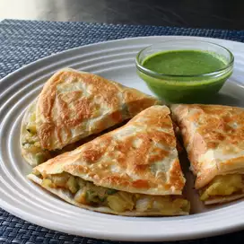

Samosa

Kenyan Samosa
Kenyan samosas are fun to make and freeze very well.
They’re so versatile, you can use whatever ground meat and vegetables you happen to have.
Just make sure to make extra for snacking on later
Ingredients
- 1 pound ground meat (my friend used turkey, I used beef; they were both good)
- 1/4 cup chopped cilantro
- 1 grated carrot
- 1 cup finely chopped cabbage
- 1/2 finely chopped onion
- 5 cloves garlic (we love garlic, feel free to use less)
- Salt and pepper to taste
- 1/2 cup of flour and water - mixed
- Oil for frying (my friend used canola, I used coconut)
- Oil for frying (my friend used canola, I used coconut)
x
Steps
- Cut tortillas in half and set aside.
- Brown meat.
- Chop all vegetables and add to meat.
- Add salt and pepper.
- Fold tortillas into a triangle so that they make a pocket.
- Use the flour and water mixture as a paste to seal the seams.
- Put a heaping teaspoon of meat in the pocket.
- Again, use the flour and water mixture to seal the top seam and fold it over. At first I used quite a bit of the flour and water but as I got more comfortable with sealing the seams I didn't need as much.
- After you have a few made, heat the oil to fry them.
- Fry them until the pastry is brown and then flip.
- Remove from pan when both sides are brown and put them on a plate with a towel to absorb the oil or on a rack with a platter underneath.
- Makes about 20